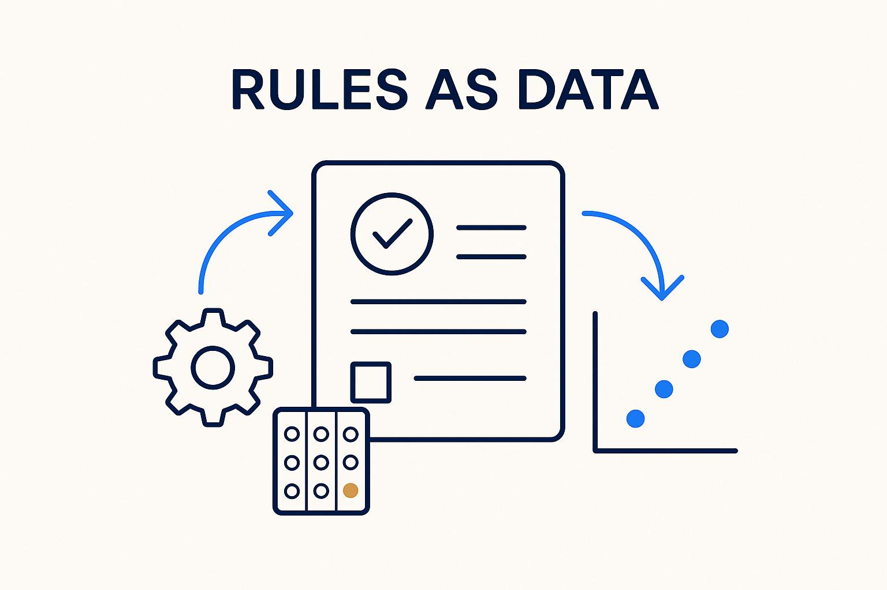

Constraints and logic expressed as data, not buried in code — rules say what must hold, versioned and enforceable, so quality and governance travel with the model.

> Constraints and logic expressed as data, not buried in code — rules say what must hold, versioned and enforceable, so quality and governance travel with the model.
Rules are the constraints and logic of a domain, written as data rather than buried in code: a validation rule, a business rule, a quality check, a governance policy. When a rule lives as structured metadata — an expression with a scope and a severity — it can be versioned, tested, enforced automatically, and asked about (“which entities does this rule touch?”). When it lives inside a stored procedure or someone’s head, it drifts and no one can see it.
This is the new role of the architect made concrete: instead of writing a PowerPoint that stays unread, you supply the rules in a technical, machine-readable format that actually drives the platform. The rule *is* the deliverable, and it runs. Governance stops being a document people are supposed to follow and becomes something that travels with the data and holds automatically.
Rules pair with their siblings: skills say how to do something, patterns say what shape to reach for, and rules say what must be true — all as versioned metadata the AI can read and enforce. Structure without rules is a shape with no guarantees; rules are what make the model trustworthy.
Where it lives: the method layer of Breakthrough Modeling — constraints as data that travel with the model.